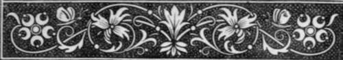

First Letter
Description
This section is from the book "Letters On Demonology And Witchcraft", by Walter Scott. Also available from Amazon: Letters On Demonology & Witchcraft.
First Letter
Origin of the general Opinions respecting Demonology among Mankind—The Belief in the Immortality of the Soul is the main inducement to credit its occasional reappearance—The Philosophical Objections to the Apparition of an Abstract Spirit little understood by the Vulgar and Ignorant—The situations of excited Passion incident to Humanity, which teach men to wish or apprehend Supernatural Apparitions—They are often presented by the Sleeping Sense—Story of Somnambulism—The Influence of Credulity contagious, so that Individuals will trust the Evidence of others in despite of their own Senses—Examples from the Historia Verdadera of Bernal Dias del Castillo, and from the Works of Patrick Walker— The apparent Evidence of Intercourse with the Supernatural World is sometimes owing to a depraved State of the bodily Organs—Difference between this Disorder and Insanity, in which the Organs retain their tone, through that of the Mind is lost—Rebellion of the Senses of a Lunatic against the current of his Reveries—Narratives of a contrary Nature, in which the Evidence of the Eyes overbore the Conviction of the Understanding—Example of a London Man of Pleasure—Of Nicolai, the German Bookseller and Philosopher—Of a Patient of Dr. Gregory—Of an Eminent Scottish Lawyer deceased —Of this same fallacious Disorder are other instances, which have but sudden and momentary endurance—Apparition of Maupertuis—Of a late illustrious Modern Poet—The Cases quoted chiefly relating to false Impressions on the Visual Nerve, those upon the Ear next considered—Delusions of the Touch chiefly experienced in Sleep—Delusions of the Taste—and of the Smell—Sum of the Argument.
YOU have asked of me, my dear friend, that i should assist the Family Library, with the history of a dark chapter in human nature, which the increasing civilisation of all well-instructed countries has now almost blotted out, though the subject attracted no ordinary degree of consideration in the older times of their history.
Among much reading of my early days, it is no doubt true that i travelled a good deal in the twilight regions of superstitious disquisitions. Many hours have i lost,—" i would their debt were less ! "—in examining old, as well as more recent narratives of this character, and even in looking into some of the criminal trials so frequent in early days, upon a subject which our fathers considered as matter of the last importance. And, of late years, the very curious extracts published by Mr. Pitcairn, from the Criminal Records of Scotland, are, besides their historical value, of a nature so much calculated to illustrate the credulity of our ancestors on such subjects, that, by perusing them, i have been induced more recently to recall what I had read and thought upon the subject at a former period.
As, however, my information is only miscellaneous, and I make no pretensions, either to combat the systems of those by whom I am anticipated in the consideration of the subject, or to erect any new one of my own, my purpose is, after a general account of Demonology and Witchcraft, to confine myself to narratives of remarkable cases, and to the observations which naturally and easily arise out of them ,—in the confidence that such a plan is, at the present time of day, more likely to suit the pages of a popular miscellany, than an attempt to reduce the contents of many hundred tomes, from the largest to the smallest size, into an abridgement, which, however compressed, must remain greatly too large for the reader's powers of patience.
A few general remarks on the nature of Demonology, and the original cause of the almost universal belief in communication betwixt mortals and beings of a power superior to themselves, and of a nature not to be comprehended by human organs, are a necessary introduction to the subject.
The general, or, it may be termed, the universal belief of the inhabitants of the earth, in the existence of spirits separated from the encumbrance and incapacities of the body, is grounded on the consciousness of the divinity that speaks in our bosoms, and demonstrates to all men, except the few who are hardened to the celestial voice, that there is within us a portion of the divine substance, which is not subject to the law of death and dissolution, but which, when the body is no longer fit for its abode, shall seek its own place, as a sentinel dismissed from his post. Unaided by revelation, it cannot be hoped that mere earthly reason should be able to form any rational or precise conjecture concerning the destination of the soul when parted from the body; but the conviction that such an indestructible essence exists, the belief expressed by the poet in a different sense, Non omnis moriar, must infer the existence of many millions- of spirits, who have not been annihilated, though they have become invisible to mortals, who still see, hear, and perceive, only by means of the imperfect organs of humanity. Probability may lead some of the most reflecting to anticipate a state of future rewards and punishments ; as those experienced in the education of the deaf and dumb, find that their pupils, even while cut off from all instruction by ordinary means, have been able to form, out of their own unassisted conjectures, some ideas of the existence of a Deity, and of the distinction between the soul and body—a circumstance which proves how naturally these truths arise in the human mind. The principle that they do so arise, being taught or communicated, leads to farther conclusions.
A Witch of about the middle of the Eighteenth Century
These spirits, in a state of separate existence, being admitted to exist, are not, it may be supposed, indifferent to the affairs of mortality, perhaps not incapable of influencing them. It is true, that, in a more advanced state of society, the philosopher may challenge the possibility of a separate appearance of a disembodied spirit, unless in the case of a direct miracle, to which, being a suspension of the laws of nature, directly wrought by the Maker of these laws, for some express purpose, no bound or restraint can possibly be assigned. But under this necessary limitation and exception, philosophers might plausibly argue, that, when the soul is divorced from the body, it loses all those qualities which made it, when clothed with a mortal shape, obvious to the organs of its fellow-men. The abstract idea of a spirit certainly implies that it has neither substance, form, chape, voice, or any thing which can render its presence visible or sensible to human faculties. But these sceptic doubts of philosophers on the possibility of the appearance of such separated spirits, do not arise until a certain degree of information has dawned upon a country, and even then only reach a very small proportion of reflecting and better informed members of society. To the multitude, the indubitable fact, that so many spirits exist around and even amongst us, seems sufficient to support the belief that they are, in certain instances at least, by some means or other, able to communicate with the world of humanity. The more numerous part of mankind cannot form in their mind the idea of the spirit of the deceased existing, without possessing or having the power to assume the appearance which their acquaintance bore during his life, and do not push their researches beyond this point.
Continue to: